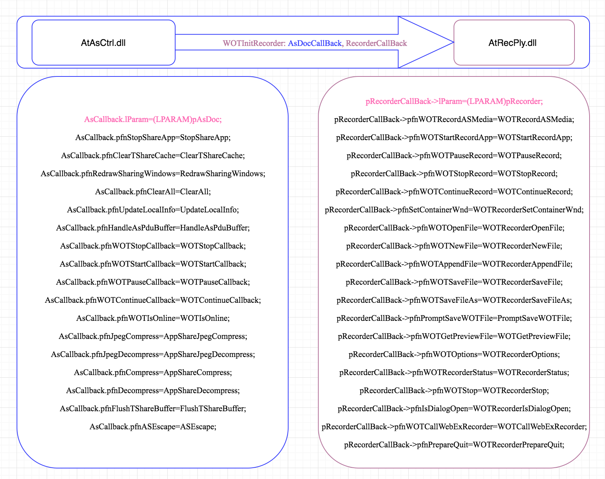

F7112 US29571: Understand current local recording background knowledge¶
Task¶
- Provide support from AS side
- Provide support from AtAuthor side
- How current AtAuthor work
Output¶
- Document current local recording work’s logic
- Define what will do in the next sprint
Atasctrl call Atrecply¶

Key Points¶
- CSmRecordSessionMgr::StartRecord
- RECORD_PLAYER_NAME, atauthor.exe
- CSmRecordSessionMgr::SetRecordCodec
- AS CODEC H264 1
- IsTandbergMeeting : SiteConfigExt & SITE_CONFIGEXT_SUPPORT_TP_PLUS(0x1000000)
- IsEnableMp4PlaybackInNonCMR : EnableMP4ForNonCMR
- GetHostCETFlag : HostCETFlag
- GetCETMeetingFlag : CETMeetingFlag
- GetSupportTPFlag : SiteConfigExt & SITE_CONFIGEXT_SUPPORT_TP (0x800)
AS CODEC TSHARE 0
- atauthor.cpp
- _tWinMain
atres.dll
-ONLINERECORD H264Codec
Mutex, WebExOnDemanAuthorClass
g_container.InsertObject, atasctrl.dll
- WebEx Recording(*.wrf), IDS_SAVE_RECORD_FILTERS
- CSmRecordSessionMgr::GetWebExRecordFileName
- CSmRecordSessionMgr::GetRecordFileDlgTitleFromService
- Save Recorded Meeting As
- IDS_MEETING_RECORD_TITLE
- pfwres.dll
- CWBXFileDlg
ApOnlineWebExRecord
- WebExOnDemandAuthorClass
- IDM_RPUI_PAUSE
RecorderCallBack
- CWotRecorder
- AudioModule
- ATAUDIO.dll
- atrecply.dll
- Click Start button on Recorder Panel
- atrecply.dll!SplitFrameWndProc
- atrecply.dll!CWotRecorder::ReSetTimer
- atrecply.dll!CWotRecorder::InitAudio
- ataudio.dll!ATInitAudio
- Module call stack
- atauthor.exe
- atasctrl.dll
- atrecply.dll
- ataudio.dll
- Atauthor.exe dll list
- atres.dll
- atasctrl.dll
- atrecply.dll
- atrpui.dll
- ATRECPLY.LOG
- ataudio.dll
- atas32.dll
- atasnt40.dll
- atasuicom.dll
- atdl2006.dll
- atjpeg60.dll
- atkbctl.dll
- atpack.dll
- Atwbxui15.dll
- CWrfRecorderPanel
- atRecorderPanel.h
- IDS_RPUI_RECORDERPCAUDIO, Record PC Audio
- atrpui.dll
- InitRecorderPanel
- CWotRecorder::CreatePanel, load atrpui.dll by atrecply.dll
CATAudioRecordChannel
CWotRecorder::WriteToWOTFileOnLine
- Audio data write to file
- atrecply.dll!CWotRecorder::WriteToWOTFileOnLine(unsigned char * lpBuffer, unsigned long dwSize) Line 4055 C++
- atrecply.dll!CWotRecorder::WriteToWOTFile(unsigned char * lpBuffer, unsigned long dwSize) Line 1796 C++
- atrecply.dll!CWotRecorder::WOTRecordASAudioVideoMedia(unsigned char bMediaType, unsigned char * lpBuffer, unsigned long dwBufferSize) Line 1640 C++
- atrecply.dll!CWotRecorder::WOTRecordMergerAudio() Line 2139 C++
- atrecply.dll!CWotRecorder::WOTRecordAudioMedia(unsigned char * lpBuffer, unsigned long dwBufferSize, int bForceNewPacket) Line 1748 C++
- atrecply.dll!AudioRecordCallBack(void * pAudioEngine, unsigned long dwLength, unsigned char * pBuffer, long lParam, unsigned long dwParam) Line 323 C++
- ataudio.dll!AudioModule::HandleRecordRequest(int option) Line 1783 C++
- ataudio.dll!AudioModule::OnMessage1(tagMESSAGE & msg) Line 2690 C++
- ataudio.dll!MessageQueue::WaitForMessage1() Line 495 C++
- ataudio.dll!MessageQueue::_CreateQueue1(void * context) Line 411 C++
- AS data write to file
atrecply.dll!CWotRecorder::WOTBeginAsKeyFrame(int bCacheReset, int bScreenRefresh) Line 1813 C++
atrecply.dll!CWotRecorder::RequestDepentAsKeyFrame() Line 979 C++
atrecply.dll!SplitFrameWndProc(HWND__ * hWnd, unsigned int uMessage, unsigned int wParam, long lParam) Line 3841 C++
- 2018-04-04
- atrecply.dll!CWotRecorder::WOTRecordASAudioVideoMedia(unsigned char bMediaType, unsigned char * lpBuffer, unsigned long dwBufferSize) Line 1597 C++
- atrecply.dll!CWotRecorder::WOTRecordASMedia(unsigned char * lpBuffer, unsigned long dwBufferSize) Line 1685 C++
- atrecply.dll!WOTRecordASMedia(long lParam, unsigned char * lpBuffer, unsigned long dwBufferSize) Line 157 C++
- send record status to webexmgr wot.h
- WOT_RECORDER_COMMAND_MSG WM_USER+110
- WOT_RECORDER_COMMAND_START 1
- WOT_RECORDER_COMMAND_PAUSE 2
- WOT_RECORDER_COMMAND_RESUME 3
- WOT_RECORDER_COMMAND_STOP 4
- CWotRecorder::WOTRecorderEscape, RecorderEscape
- WOT_RECORDER_ESC_SETMEETINGHWND
- m_hMeetingWnd = (HWND)dwParam1;
WOT_RECORDER_ESC_SETRECORDERCONSOLEHWND
- WOTSetRecorderConsoleWnd((HWND)dwParam1)
- m_hRecorderConsoleWnd
- WOT_RECORDER_ESC_SETRECORDERPANELHWND
- WOTSetRecorderPanelWnd((HWND)dwParam1)
- m_hRecorderPanelWnd = hRecorderPanelWnd
- WOT_RECORDER_COMMAND_MSG
pcmappsharemgr.h
- SmDefUIMgr.cpp
- CSmDefUIMgr::OnWindowsMsg
- CSmDefUIMgr::OnRecordMessage
- CSmRecordSessionMgr::OnRecordMessage
- SendPDURecordStatus
wot.h
CWotRecorder::WOTRecorderEscape
- WRF Data Type
- WOT_CHILDFRAME_AS 0x01
- WOT_CHILDFRAME_AUDIO 0x02
- WOT_CHILDFRAME_VIDEO 0x03
- WOT_CHILDFRAME_CONTROL 0x08
- WOT_CHILDFRAME_HIDDEN 0x09
- AS Codec Type
AS_CODEC_TSHARE
AS_CODEC_H264
CDvAsDoc::SelectCodec
- CTPMeetingHelper::OnH264Command
- m_pAsDoc->SelectCodec(AS_CODEC_H264)
- Audio Codec Type
- AUDIOCODEC_GSM610 0
- AUDIOCODEC_G7231_63 1
- AUDIOCODEC_G7231_53 2
- AUDIOCODEC_PCM1 3
- AUDIOCODEC_PCM2 4
- AUDIOCODEC_PCM3 5
- AUDIOCODEC_FLAC 6
- AUDIOCODEC_G711 7
- AUDIOCODEC_LAME 8
- AUDIOCODEC_RSV2 9
- AUDIOCODEC_ISAC 10/added aaron for iSAC/
- AUDIOCODEC_ILBC 11//by smithg for adding iLBC codec type
- ataudio.dll
- ATGetCodecInfo
libfaac.dll
- mpeg4convert.dll
- webex-player\src\windows\nbrmpeg4\mp4creator.cpp
- AS_DATA_WINDOWSIMAGE
- CAsKernelDataCenter::OnRcvNtHookDataPack
- CAsKernelDataCenter::SendDataToTShareCodec
- CAsKernelDataCenter::SendDataToRawDataCodec
- CAsKernelDataCenter::SendDataToH264Codec
- How ATRECPLY.dll know the video codec type
- ATASCTRL.DLL : CDvAsDoc::StartShareApp
- m_pWebExRecorder->WOTCallWebExRecorder(WOT_RECORDER_ESC_SET_H264, 1, 0, NULL, 0);
- ATRECPLY.DLL : WOTCallWebExRecorder
- CWotRecorder::WOTRecorderEscape
- WOT_RECORDER_ESC_SET_H264 : WOTSetH264Codec
- CWotRecorder::WOTSetH264Codec
Test Case¶
- Host A Start a meeting, select Record on This Computer
- atmgr.exe call atrecply.dll to record
- Record at attendee side
- “c:programdatawebexwebext33_umcATAUTHOR.EXE” -ONLINERECORD
- “c:programdatawebexwebext33_umcATAUTHOR.EXE” -ONLINERECORD H264Codec
- Download atrecply MSI, then click WebEx Recorder to start AtAuthor.exe
- Then select record Meeting Process
- “C:Program Files (x86)WebExRecord PlaybackAtAuthor.exe”
FQA¶
How meeting process know the recording status
How AS component know codec solution
- atasctrl.dll
- ApSetHwndforBacktoMeeting
- ApOnlineWebExRecord
- ApStartShareApplicationWithoutDelay
- Where to load atrecply.dll
- atasctrl.dll
- CWebExRecorder::InitWebExRecorder
- atrecply.dll
- Where to load ataudio.dll
- atrecply.dll
- CWotPlayer::InitAudioModule
- Where to capture audio
webex-atcodec-k2
atcodec_k2.lib
- MMSystem.h
- waveInUnprepareHeader
- waveInOpen
- waveInStart
- waveInAddBuffer
- waveInClose
- waveInReset
- waveInGetNumDevs
- waveInGetDevCaps
- Where to set audio format
- WAVE_FORMAT_PCM
- waveInOpen
- WAVEFORMAT, wFormatTag
How Meeting Process Find Local Recording Window
HWND CSmRecordSessionMgr::FindRecordWindow()
{
HWND hWnd = ::FindWindowEx(NULL, NULL, _T("#32770"), NULL);
do
{
HWND hChildWnd = ::FindWindowEx(hWnd, NULL, NULL, _T("0xRecordPanleID853"));
if(hChildWnd != NULL)
{
return hWnd;
}
hWnd = ::FindWindowEx(NULL, hWnd, _T("#32770"), NULL);
}
while(hWnd != NULL);
return NULL;
}